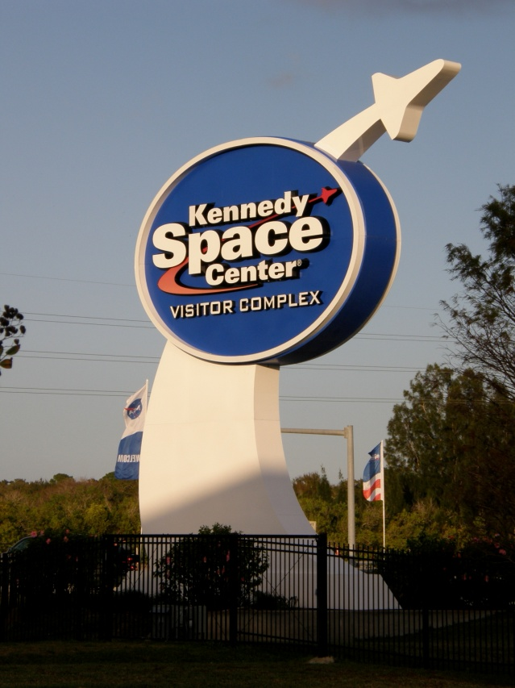
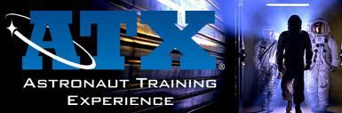

NASA EDUCATION TOUR PACKAGES The schools and colleges can hugely benefit from this package as all essential requirements for the trip are arranged by professionals at a very reasonable price. This comprehensive package will take care of everything that the students need in order to visit NASA and enjoy their learning time there!. Tour NASA includes a meet with veteran NASA astronaut, see inspiring 3D IMAX® films and discover firsthand how a field trip or kid-friendly vacation can enrich every student's education. At Kennedy Space Center Visitor Complex, you get the unique chance to tour NASA’s launch and landing facilities, experience interactive simulators, enjoy live shows and have jaw-dropping encounters with massive rockets. It's all what you can expect from an inspiring day at Kennedy Space Center in Florida.
On arrival in Miami, Group will be received by our representative and take the group via motor coach to the hotel. Once check in is complete there will be free time to unpack and relax at the pool. Later Tour Briefing over Tea with Snacks.
At Universal's Islands of Adventure the world's most cutting-edge rides and attractions make you the hero of your favourite stories, myths, legends, cartoons, comic books and children's tales. You'll join Harry Potter™ and his friends in an unforgettable adventure on the ground-breaking new ride, Harry Potter and the Forbidden Journey™. Battle villains on The Amazing Adventures of Spider-Man®. You'll launch from zero to 40 mph in two seconds flat on The Incredible Hulk Coaster. Plunge down an 85-foot waterfall to escape the jaws of a hungry T-rex on the Jurassic Park River Adventure®. Cheer on the heroes as you enjoy the explosive feats of The Eighth Voyage of Sindbad® stunt show. Help save the day as you hurtle down the Dudley Do-Right's Ripsaw Falls® flume ride. Spin and whirl through the mischievous world of The Cat in the Hat™. It's action, thrills and excitement for all ages… and it's only at Universal's Islands of Adventure. Lunch included by voucher in the park. After dinner and check into hotel.
There's no better way to get a glimpse of Kennedy Space Center than on the Kennedy Space Center Tour (KSC Tour). Take a NASA bus for a drive-by view of a launch pad and then experience the historic Apollo 8 launch site and marvel at a massive 363-foot-long Saturn V moon rocket at the Apollo/Saturn V Center. Experience the space program's past and future on the KSC Up-Close Explore Tour, where visitors get an insider’s view of Kennedy Space Center's role in space exploration.
Trace the progression of space exploration at the place where it all began……Cape Canaveral Air Force Station. Travel through time on the KSC Up-Close Cape Canaveral: Then & Now Tour to learn how the first rockets were launched and the first astronauts became heroes.
Engaging education programs at Kennedy Space Center Visitor Complex bring space exploration to life. Inspire students with a Kennedy Space Center Visitor Complex field trip. Special admission rates allow students to explore the Apollo/Saturn V Center, home of the massive 365 foot-long Saturn V rocket, to tour NASA areas and to interact with shows and exhibits. During your Florida field trip, students also meet astronauts, watch larger-than-life 3D IMAX® films, come face-to-face with Space Shuttle Atlantis℠, strap into the Shuttle Launch Experience® and explore historic rockets.
Astronaut Training Experience (ATX)- You've dreamed about it. Now live it! Through ATX (Astronaut Training Experience) you can put yourself to the test and see if you have the right stuff to become a NASA astronaut. Immerse yourself in the exciting world of today’s astronauts with realistic astronaut training. You will hear first-hand from a veteran NASA astronaut, experience a space shuttle mission simulation and perform hands-on space exploration activities. This intense, exciting half-day of hands-on training is the closest most people ever get to going into orbit. Your ATX training includes operating a full-scale shuttle mock-up and taking the helm in mission control. The entire program was designed with the help of NASA astronauts, so you know it’s as real as it gets! Before we say good bye to NASA- this is must for Educators: You know how to teach. NASA help you inspire. Kennedy Space Center Visitor Complex is a resource for you and your students to learn about STEM in the place where scientific history was made as the launch site for NASA and continues to serve as the gateway to future space exploration. The programs is offered to teachers and students strive to spark an excitement for the sciences and stimulate the curiosity to explore the world we live in and beyond.
Full day visit to either DISNEYLAND BLIZZARD BEACH & SHOPPING AT PRIME OUTLETS or Seaworld - You can choose any one park. Overnight is in Orlando.
While in New York City, visit the following world famous sites:
Take the Flight in the morning- Arrival at Newyork Airport. From the airport, land straight at Times Square and be amazed by the lights of this mega city. The most happening place, indeed! Paris may be known as the “City of Lights,” but anyone who has ever been to New York City knows that the lights of Times Square give Paris a run for its money. Times Square, illuminated by stories-high billboards, blinking lights and glowing LCD screens. See New York when it sparkles! Enjoy nighttime views and ambiance of Times Square, Chinatown, Empire State Building , Greenwich Village, SoHo, Little Italy, Manhattan Bridge, Brooklyn Bridge and Lower East Side. Our licensed tour guides will narrate the history of all the famous sights of this magnificent city for your enjoyment and learning pleasure. Breakfast & Dinner
Full day in New York for sightseeing / leisure / shopping. After breakfast in Hotel, proceed on full day tour of New York City. First take a Cruise Liberty Island for a spectacular view of New York city skyline and for a close view of the famous American icon of freedom - The statue of Liberty- a gift of friendship from the people of France to the people of the United States and is a universal symbol of freedom and democracy. The Statue of Liberty was dedicated on October 28, 1886, designated as a National Monument in 1924 and restored for her centennial on July 4, 1986. Also visit 5th Avenue, Rockfeller Center, Ground Zero, Wall Street, New York Stock Exchange, U.N. building, Central Park, Manhattan, Brooklyn Bridge and also the 86th floor observatory of Empire state building for a bird’s eye view of the city. Check into hoteDay 11: WASHINGTON DC - PHILADELPHIAl Breakfast & Dinner
After breakfast head north to either the Howe Caverns or Secret Caverns in upstate New York. We will then continue on to Niagara Falls, NY where we will seeThundering Water Cultural Show. Niagara Falls, NY Known and loved for both their power and their beauty, the Niagara Falls offer an experience unlike any other. More water tumbles down from the Niagara River every minute than any other place in the world. Thundering Water Cultural Show Niagara, like many impressive wonders of nature, is a sacred place for the local Native American people. This show uses dance as a storytelling medium through which to showcase the impact that the falls have had on native culture. Standard Hotel: R.I.T in Rochester or similar
We will then continue to explore Niagara Falls, NY where we will take the famous Maid of the Mist or the Jet Boat Ride, and the Niagara Falls Adventure Movie. Guests will have the chance to choose either to stay in the Falls Park for self-exploration or have an in-depth tour that includes visits to the Whirlpool State Park and Old Fort Niagara. We will then head to Watkins Glen State Park in the Finger Lakes region of New York. Niagara Falls, NY Known and loved for both their power and their beauty, the Niagara Falls offer an experience unlike any other. More water tumbles down from the Niagara River every minute than any other place in the world. Maid of the Mist This famous boat ride gets passengers up close and personal with the Niagara Falls! The Maid rides right into the mists thrown up by the roaring cascade as the Niagara River tumbles over the edge of the falls.
In the morning, we will head south to Washington, DC to see all of the famous monuments. Guests will have the chance to visit Madame Tussauds Wax Museum if time permits and take a Cruise on the Potomac River that will allow them to see the different sites of Washington DC from the water. We will then travel to Philadelphia, PA to see the Liberty Belland Independence Hall in National Independence Park.
For more details visit : http://www.triptonasa.com/